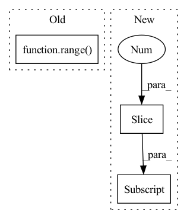

Pattern ID :264
Before Change
stride=pooling_stride,
padding=pooling_padding) if max_pool else nn.Identity()
)
for i in range( n_conv_layers)
])
self.flattener = nn.Flatten(2, 3)
self.apply(self.init_weight)After Change
[in_planes for _ in range(n_conv_layers - 1)] + \
[n_output_channels]
n_filter_list_pairs = zip(n_filter_list[:-1] , n_filter_list[1:])
self.conv_layers = nn.Sequential(
*[nn.Sequential(In pattern: SUPERPATTERN
Frequency: 4
Non-data size: 3
Instances Fragment ID: 1131781
Project Name: lucidrains/vit-pytorch
Commit Name: cb6d749821bbf3b0bd17c9e8e64eb343f40b3f69
Time: 2022-10-29
Author: lucidrains@gmail.com
File Name: vit_pytorch/cct.py
Class Name: Tokenizer
Method Name: __init__
Parent Class: nn.Module
Fragment ID: 1131783
Project Name: tmdt-buw/karolos
Commit Name: bda97ff0aa40ddff62e42733856c4c66cc37b8b6
Time: 2020-05-13
Author: timo.thun@ima-ifu.rwth-aachen.de
File Name: agents/nnfactory/sac.py
Class Name: Critic
Method Name: __init__
Parent Class: nn.Module
Fragment ID: 1131782
Project Name: tmdt-buw/karolos
Commit Name: bda97ff0aa40ddff62e42733856c4c66cc37b8b6
Time: 2020-05-13
Author: timo.thun@ima-ifu.rwth-aachen.de
File Name: agents/nnfactory/sac.py
Class Name: Policy
Method Name: __init__
Parent Class: nn.Module
Fragment ID: 1131785
Project Name: kaleidophon/nlp-uncertainty-zoo
Commit Name: 9d09a1510e9130c547c50d1a18c80ed3ffe9cbbb
Time: 2021-08-11
Author: dennis.ulmer@gmx.de
File Name: nlp_uncertainty_zoo/lstm_variants.py
Class Name: CustomLSTMLogic
Method Name: __init__
Parent Class: nn.Module